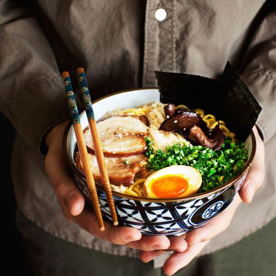

Map, 도톤보리의 길
오사카 시영지하철 미도스지·요쓰바시선, 센니치마에선,
긴키닛폰철도의 "남바"역
또는 오사카시영지하철 센니치마에선·사카이스지선의 "니혼바시"역이 근처 역이다.
맛집 '이치란 라멘'

메뉴가 오직 라멘 하나밖에 없는 점에서 라멘에 대한 이치란의 장인정신을 느낄 수 있다.
꼭 먹어보는것을 추천한다!
사진 명소 '글리코 상'
마라토너가 오사카 성을 돌아 도톤보리에 골인한다는 내용을 의미하고 있다.
현재는 오사카의 명물이며, 기념사진 촬영지로도 인기가 높다.